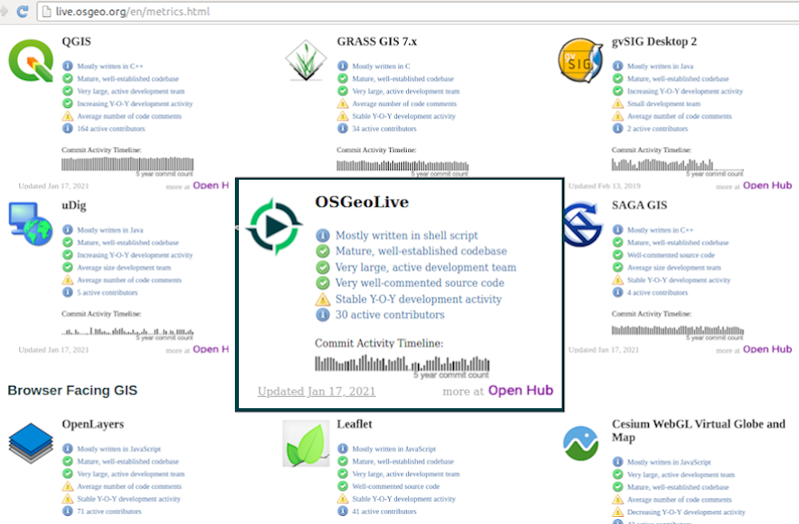
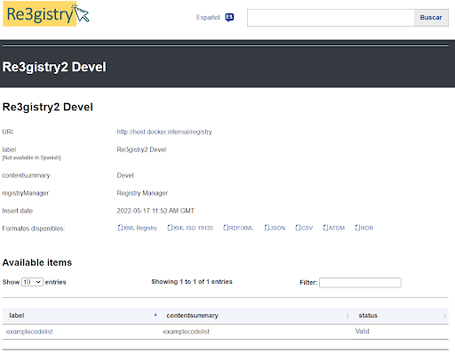
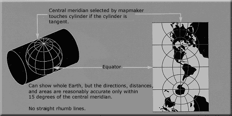

OSGeoLive

Version: 15
Released: August 2022
Press “s” for slide notes, ESC to zoom out, SPACE / arrow keys to navigate.
Pop-ups are blocked in some browsers due to security settings. Try Firefox or Safari.
Una distribución geoespacial GNU/Linux de código abierto
Encuentre esta presentación
What is new in 15.0

What is new in 15.0
Updated to Lubuntu 22.04 LTS
What is new in 15.0
Paquetes principales actualizados basados en DebianGIS
What is new in 15.0
QGIS 3.22.7,
GDAL 3.4.3,
PROJ 8.2.1,
PostGIS 3.2.0,
GRASS 8.2.0,
GeoServer 2.21.0,
MapServer 7.6.4,
and many more…
What is new in 15.0
New project added: ETF testing framework software
What is new in 15.0
Descargue OSGeoLive ISO o VMDK (con aún más software)
What is new in 15.0
Actualizaciones de la documentación
What is new in 15.0
OSM data for Firenze
What is new in 15.0
Paquetes actualizados devueltos a`UbuntuGIS <href=»https://wiki.ubuntu.com/UbuntuGIS»>`__
What is new in 15.0
Registro de Cambios Completo
¿Qué es OSGeoLive?
Componentes en OSGeoLive
Más de 50 aplicaciones geoespaciales de código abierto
Conjuntos de datos de ejemplo
Descripciones generales y inicios rápidos coherentes
Traducciones
DVD / USB / Máquina virtual

Criterios de calidad
Software establecido, estable y funcional
Active community Metrics
Pipeline de Producción y Marketing

Fundación Geoespacial de Código Abierto (OSGeo)
OSGeo
Non Profit for geospatial community, fostering
Software libre y de código abierto
Estándares Abiertos
Educación Abierta
Investigación abierta
Datos Abiertos
Una distribución geoespacial GNU/Linux de código abierto

Estándares OGC

Interoperabilidad
A prueba de futuro
Retorno de la inversión
SIG de Escritorio
GRASS SIG
gvSIG Desktop
QGIS
OpenJUMP SIG
SAGA
uDig
GRASS SIG

gvSIG Desktop

QGIS

OpenJUMP SIG

SAGA

uDig

SIG en Navegador
GeoMoose
GeoNode
Mapbender
OpenLayers
GeoStyler
Cesium
GeoExt
Leaflet
GeoMoose

GeoNode

Mapbender

OpenLayers

GeoStyler

Cesium

GeoExt

Leaflet

Servicios web
deegree
GeoNetwork
GeoServer
MapCache
MapServer
pycsw
PyWPS
istSOS
MapProxy
pygeoapi
Zoo Project
actinia
EOxServer
ETF
ncWMS
Servidor QGIS
Re3gistry
t-rex
52 North SOS
52 North WPS
deegree

GeoNetwork

GeoServer

MapCache

MapServer

pycsw

PyWPS

istSOS

MapProxy

pygeoapi

Zoo Project

actinia

EOxServer

ETF

ncWMS

Servidor QGIS

Re3gistry
t-rex

52 North SOS

52 North WPS

Almacenes de datos
PostGIS
pgRouting
Rasdaman
SpatiaLite
PostGIS

pgRouting

Rasdaman

SpatiaLite

Navegación y Mapas
Marble
Editor iD
JOSM
GpsPrune
OpenCPN
OpenStreetMap
Marble

Editor iD

JOSM

GpsPrune

OpenCPN

OpenStreetMap

Herramientas espaciales
OTB
GMT
Jupyter Notebook
Mapnik
R
OTB

GMT

Jupyter Notebook

Mapnik

R

Dominio específico SIG
XyGrib
XyGrib

Datos
Natural Earth
Carolina del Norte USA Conjunto de datos educativo
Conjunto de datos NetCDF
OpenStreetMap
Natural Earth

Carolina del Norte USA Conjunto de datos educativo

Conjunto de datos NetCDF

OpenStreetMap

Librerías Geoespaciales
GDAL/OGR
GEOS
GeoTools
PROJ
JTS
GDAL/OGR

GEOS

GeoTools

PROJ
JTS

Créditos
Desarrolladores y mantenedores de proyectos
Autores y revisores de la documentación
Traductores
Comité Directivo del Proyecto
Angelos Tzotsos (Presidente)
Brian M Hamlin
Alex Mandel
Johan Van de Wauw
Bas Couwenberg
Massimo De Stefano
Astrid Emde
Nicolas Roelandt
Vicky Vergara
Enock Seth Nyamador
Involúcrate
Conviértete en miembro de nuestro equipo
Únete a nuestra Lista de Correos y preséntate
Take part in our weekly IRC meetings (channel #osgeolive on Libera.Chat
Hay dos maneras en que puede ayudar
Ayude a mejorar el sitio web y la documentación de OSGeoLive
Enviar nuevos proyectos
Mejora de la documentación de OSGeoLive
Revisar, probar y corregir Quickstarts y Overviews
¡Hay una buena posibilidad de conocer un software genial!
Traducir y mejorar la documentación
La traducción se realiza en Transifex
Los Capítulos Locales pueden involucrarse fácilmente aquí
No se necesita experiencia técnica
Patrocinadores
OSGeo |
UCD ICE |
NTUA |
|
|
|
DebianGIS |
okeanos |
Georepublic |
|
|
|


{kind=link}
{kind=link}
{kind=link}
{kind=link}
{kind=link}
{kind=link}
Try out OSGeoLive